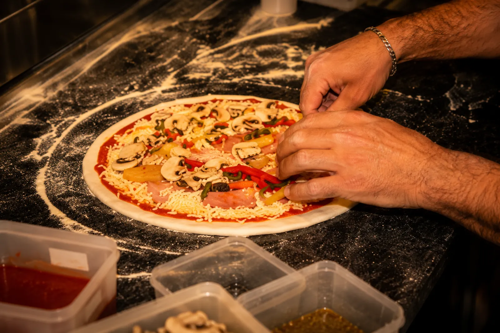
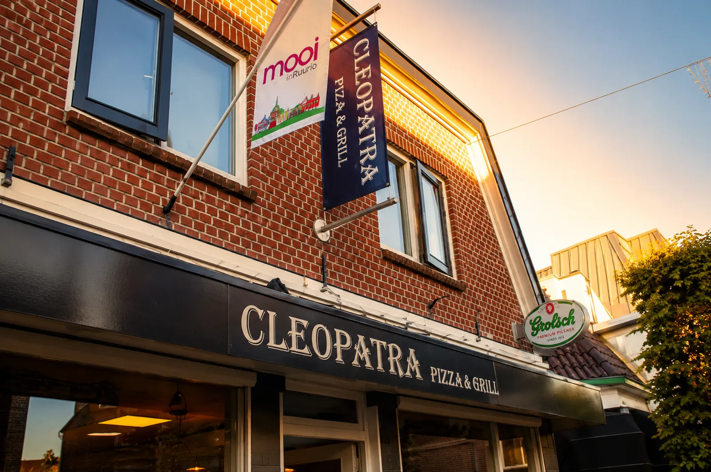

CleopatraPizza & Grill
Pizza's en gerechten van de lavagrill, midden in het gezellige centrum van Ruurlo.
- Wo t/m zo vanaf 16.00 uur
- Dorpsstraat 21 Ruurlo
- 0573 452 099 reserveren
Voor de meest heerlijke grill-gerechten en pizza's
Midden in het gezellige centrum van Ruurlo vindt u ons restaurant, waar u kunt genieten van een groot assortiment pizza's maar ook gerechten van de grill.
In de zomer kunt u bovendien gebruikmaken van ons gezellige terras.
U kunt ons bezoeken tijdens onze openingstijden, of telefonisch reserveren op 0573 452 099.


Van de lavagrillSteaks, spareribs, lamskoteletten en mixed grills
Pizza'sRuim dertig soorten, van Margherita tot Calzone

Schotels & broodjesShoarma, kebab, kofta, shaslick en falafel
Koude voorgerechten
- Groene salade6,00
- Appel/komkommersalade6,00
- Tonijn salade8,50
- Mozzarella salade8,00
- Cleopatra saladeDiverse soorten rauwkost en kaas9,00
Warme voorgerechten
- Maïskolf van de grillGeserveerd met kruidenboter5,95
- 1/2 portie spare-ribs9,00
- Gekruide gehaktballetjesIn een pittige tomatensaus met gebakken uien en knoflook8,50
- Scampi à la grill3 grote gegrilde garnalen10,00
- Uiensoep7,00
- Romige tomatensoep6,50
- Groentesoep7,00
Specialiteitenschotels
- Shoarmaschotel (varkens)Op traditionele wijze gegrild shoarmavlees17,00
- Shoarmaschotel (lams)18,50
- ShaslickschotelGegrilde stukjes kipfilet met paprika en uien18,50
- FalafelschotelGefrituurde vegetarische mix van bonen en groente13,00
- KebabschotelGemarineerde varkenshaas19,00
- KoftaschotelPittig gekruid rundergehakt17,00
- DönerschotelTraditioneel gekruide kipdöner16,00
- KinderschotelVoor de kleine trek, met keuze uit shoarma, shaslick, kebab of kofta (1 soort)14,00

Lavagrill steak gerechten
- SpareribsGemarineerde varkensribben19,00
- Duivelse spareribsHeet gemarineerd19,50
- Varkenshaas HawaiiMet ananas en kaas21,50
- Sahara steakKogelbiefstuk21,00
- PepersteakMet grofgemalen peper22,00
- Entrecote22,00
- Rib-eye23,00
- Giant steakCa. 300 gram27,00
- LamskotelettenGemarineerd22,50
- T-bone steakLende en ossehaas29,50
- HamburgerRundvlees13,00
Combinatieschotels
Geserveerd met gefrituurde aardappeltjes, garnituur en sauzen.
- Ramsis schotelShoarma en kip-shaslick19,50
- Sphinx schotelKebab, kofta en shoarma22,00
- Cleopatra mixed grillKofta, shaslick, lamskotelet en shoarma25,00
- Lava mixed grillKipfilet, varkenshaas en maïskolf24,00
- Ribben mixed grillSpareribs en lamskoteletten23,00
- Woestijn schotelGegrilde shoarma met paprika, champignons en uien19,50
- King Toet schotelSpare-ribs en shoarma19,50
Pizza's
Op alle pizza's: tomaat en kaas.
- MargheritaOregano10,00
- Salami12,00
- BorromeaHam12,00
- FunghiChampignons12,00
- TonnoTonijn en uien13,50
- VegetariaPaprika, champignons, artisjokken, olijven en uien13,00
- HawaïHam en ananas13,00
- Döner14,00
- Quatro StagioniHam, salami, champignons en paprika13,00
- NapolitanaAnsjovis, kappertjes, uien en olijven13,00
- Calzone RomanoDubbelgevouwen, met ham, salami, paprika, champignons en uien13,50
- MarinaraGarnalen, mosselen, inktvis, tonijn en uien14,50
- Shoarma (varkens)14,00
- Shoarma (lams)15,00
- PrimaveraHam en salami12,50
- BologneseRundergehakt en bolognesesaus13,50
- Shaslick (kip)Kipfilet, paprika en uien14,00
- PeperoniHete paprika en kappertjes12,00
- Quatro Formaggi4 soorten kaas13,50
- Gorgonzola13,00
- MozzarellaVerse tomaten en mozzarella12,00
- ScampiGarnalen13,50
- SalmoneZalm en uien13,50
- Ananas11,00
- VeneziaHam en champignons11,50
- RomaHam, champignons en ei12,50
- CarniSalami, ham en spekjes12,00
- CleopatraShoarma, paprika, uien en champignons14,50
- Salmone SpecialeSpinazie, zalm en uien14,50
- ChorizoPittige salami12,00
- SpinaciSpinazie en ei12,00
- Calzone SpecialeShoarma, paprika, champignons en uien15,00
- Calzone kipKipfilet, paprika, champignons en uien15,00
Pasta
- Lasagna Al FornoGehakt, bechamel en kaas, met broodjes14,50
- Spaghetti Napolitana11,50
- Spaghetti Bolognese13,50
Visgerechten
Met gefrituurde aardappeltjes, garnituur en saus.
- Zalmfilet van de grill22,00
- Scampi6 grote garnalen van de grill24,00
- CalamariGefrituurde inktvisringen17,00
Broodjes
Met rauwkost en saus. Waar twee prijzen staan: klein / groot.
- Shoarma (varkens)8,75 / 10,50
- Shoarma (lams)9,50 / 12,00
- Kebab10,00 / 12,00
- Shaslick9,00 / 10,50
- Falafel6,00 / 8,00
- Döner7,50 / 9,50
- Kofta9,00
- Shoarma supergezondMet champignons, paprika en uien12,00
- Reurls broodje shoarmaMet champignons, paprika, uien en gesmolten kaas13,00
- Kapsalon11,50
- Hamburger6,50
- Kaasburger7,50
- Kaas of ham4,50
- Kaas en ham5,50
- Zelfgebakken broodjes met kruidenboter5,50
- Broodje à la pizzaOnder de grill met kaas, ham en salami6,50
- Portie gebakken aardappelen5,00
3-gangen menu 27,00
- VoorgerechtSoep naar keuze
- HoofdgerechtSteak naar keuze, met gefrituurde aardappeltjes, garnituur en saus
- NagerechtCoupe gemengd ijs of koffie
Bestellen en afhalen
De hele kaart is ook mee naar huis te nemen. Bestel online via ons eigen bestelsysteem, of bel ons even.
Reserveren
Liever bij ons aan tafel? Reserveer telefonisch op 0573 452 099 of mail naar info@cleopatraruurlo.nl. In de zomer kunt u ook op ons terras zitten.
Kom langs
Openingstijden
| Maandag | gesloten |
|---|---|
| Dinsdag | gesloten |
| Woensdag | vanaf 16.00 |
| Donderdag | vanaf 16.00 |
| Vrijdag | vanaf 16.00 |
| Zaterdag | vanaf 16.00 |
| Zondag | vanaf 16.00 |